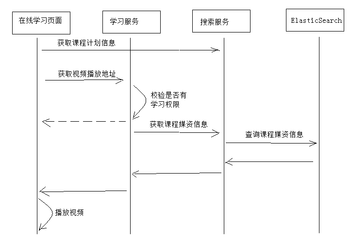

媒资管理系统集成
1 学习页面查询课程计划
1.1 需求分析
到目前为止，我们已可以编辑课程计划信息并上传课程视频，下一步我们要实现在线学习页面动态读取章节对应的视频并进行播放。在线学习页面所需要的信息有两类：一类是课程计划信息、一类是课程学习信息（视频地址、学习进度等），如下图：
在线学习集成媒资管理的需求如下：
1、在线学习页面显示课程计划
2、点击课程计划播放该课程计划对应的视频
本章节实现学习页面动态显示课程计划，进入不同课程的学习页面右侧动态显示当前课程的课程计划。
1.2 Api接口
课程计划信息从哪里获取？
目前课程计划信息在课程管理数据库和ES索引库中存在，考虑性能要求，课程发布后对课程的查询统一从ES索引库中查询。
前端通过请求搜索服务获取课程信息，需要单独在搜索服务中定义课程信息查询接口。
本接口接收课程id，查询课程所有信息返回给前端。
1 | @ApiOperation("根据id查询课程信息") |
返回的课程信息为json结构：key为课程id，value为课程内容。
1.3 服务端开发
在搜索服务中开发查询课程信息接口。
1.3.1 Service
在搜索服务中增加查询课程信息接口的service
1 | public Map<String, CoursePub> getall(String id) { |
1.3.2 Controller
1 | @Override |
1.3.3 测试
使用swagger-ui或postman测试查询课程信息接口。
1.4前端开发
1.4.1 配置虚拟主机
学习中心的二级域名为ucenter.xuecheng.com，我们在nginx中配置ucenter虚拟主机。
1 | #学成网用户中心 |
在学习中心要调用搜索的API，使用Nginx解决代理，如下图：

配置搜索Api代理路径：
1 | #后台搜索（公开api） |
1.4.2 API方法
在学习中心对课程信息的查询属于基础常用功能，所以我们将课程查询的api方法定义在base模块下，如下图：
在system.js中定义课程查询方法：
1 | import http from './public' |
1.4.3 API调用
在learning_video.vue页面中调用课程信息查询接口，得到课程计划，将课程计划json串转成对象。
1、定义视图
a、课程计划
1 | <div class="nav nav-stacked" v-for="(teachplan_first, index) in teachplanList"> |
b、课程名称
1 | <div class="top text-center"> |
2、定义数据对象
1 | data() { |
3、在created钩子方法中获取课程信息
1 | created(){ |
1.4.4 测试
在浏览器请求：http://ucenter.xuecheng.com/#/learning/4028e581617f945f01617f9dabc40000/0
4028e581617f945f01617f9dabc40000：第一个参数为课程id，测试时从ES索引库找一个课程id
0：第二个参数为课程计划id，此参数用于点击课程计划播放视频。
2 学习页面获取视频播放地址
2.1 需求分析
用户进入在线学习页面，点击课程计划将播放该课程计划对应的教学视频。
业务流程如下：

业务流程说明：
1、用户进入在线学习页面，页面请求搜索服务获取课程信息（包括课程计划信息）并且在页面展示。
2、在线学习页面请求学习服务获取视频播放地址。
3、学习服务校验当前用户是否有权限学习，如果没有权限学习则提示用户。
4、学习服务校验通过，请求搜索服务获取课程媒资信息。
5、搜索服务请求ElasticSearch获取课程媒资信息。
为什么要请求ElasticSearch查询课程媒资信息？
出于性能的考虑，公开查询课程信息从搜索服务查询。
什么时候将课程媒资信息存储到ElasticSearch中？
课程媒资信息是在课程发布的时候存入ElasticSearch，因为课程发布后课程信息将基本不再修改。
2.2 课程发布存储媒资信息
2.2.1 需求分析
课程媒资信息是在课程发布的时候存入ElasticSearch索引库，因为课程发布后课程信息将基本不再修改，具体的业务流程如下。
业务流程如下：
1、课程发布，向课程媒资信息表写入数据。
1）根据课程id删除teachplanMediaPub中的数据
2）根据课程id查询teachplanMedia数据
3）将查询到的teachplanMedia数据插入到teachplanMediaPub中
2、Logstash定时扫描课程媒资信息表，并将课程媒资信息写入索引库。
2.2.2 数据模型
在xc_course数据库创建课程计划媒资发布表：
1 | CREATE TABLE `teachplan_media_pub` ( |
数据模型类如下：
1 | @Data |
2.2.3 Dao
创建TeachplanMediaPub表的Dao，向TeachplanMediaPub存储信息采用先删除该课程的媒资信息，再添加该课程的媒资信息，所以这里定义根据课程id删除课程计划媒资方法：
1 | public interface TeachplanMediaPubRepository extends JpaRepository<TeachplanMediaPub, String> { |
2.2.4 Service
编写保存课程计划媒资信息方法，并在课程发布时调用此方法。
1、保存课程计划媒资信息方法
本方法采用先删除该课程的媒资信息，再添加该课程的媒资信息。
1 | //保存课程计划媒资信息 |
2、课程发布时调用此方法
修改课程发布的service方法：
1 |
|
3.2.5 测试
测试课程发布后是否成功将课程媒资信息存储到teachplan_media_pub中，测试流程如下：
1、指定一个课程
2、为课程计划添加课程媒资
3、执行课程发布
4、观察课程计划媒资信息是否存储至teachplan_media_pub中
注意：由于此测试仅用于测试发布课程计划媒资信息的功能，可暂时将cms页面发布的功能暂时屏蔽，提高测试效率。
2.3 Logstash扫描课程计划媒资
Logstash定时扫描课程媒资信息表，并将课程媒资信息写入索引库。‘
2.3.1 创建索引
1、创建xc_course_media索引
2、并向此索引创建如下映射
Post http://localhost:9200/xc_course_media/doc/_mapping
1 | { |
2.3.2 创建Logstash模板文件
在logstach的config目录创建xc_course_media_template.json，内容如下：
本教程的xc_course_media_template.json目录是：D:/ElasticSearch/logstash-6.2.1/config/xc_course_media_template.json
1 | { |
2.3.3 配置mysql.conf
在logstash的config目录下配置mysql_course_media.conf文件供logstash使用，logstash会根据mysql_course_media.conf文件的配置的地址从MySQL中读取数据向ES中写入索引。
参考https://www.elastic.co/guide/en/logstash/current/plugins-inputs-jdbc.html
配置输入数据源和输出数据源。
1 | input { |
2.3.4 启动logstash.bat
启动logstash.bat采集teachplan_media_pub中的数据，向ES写入索引。
1 | logstash.bat -f ../config/mysql_course_media.conf |
2.4 搜索服务查询课程媒资接口
2.4.1 需求分析
搜索服务提供查询课程媒资接口，此接口供学习服务调用。
2.4.2 Api
在课程搜索包下定义Api
1 | @ApiOperation("根据课程计划查询媒资信息") |
2.4.3 Service
1、配置课程计划媒资索引库等信息
在application.yml中配置
1 | xuecheng: |
2、service方法开发
在课程搜索服务中定义课程媒资查询接口，为了适应后续需求，service参数定义为数组，可一次查询多个课程计划的媒资信息。
1 | //根据课程计划查询媒资信息 |
2.4.4 Controller
1 | @Override |
2.4.5 测试
使用swagger-ui和postman测试课程媒资查询接口。
3 在线学习接口
3.1 需求分析
根据下边的业务流程，本章节完成前端学习页面请求学习服务获取课程视频地址，并自动播放视频。

3.2 搭建开发环境
3.2.1 创建数据库
创建xc_learning数据库，学习数据库将记录学生的选课信息、学习信息。
导入：资料/xc_learning.sql
3.2.2 创建学习服务工程
参考课程管理服务工程结构，创建学习服务工程：

pom.xml
1 | <dependencies> |
1 | server: |
启动类：
1 | @EnableDiscoveryClient |
3.3 Api接口
此api接口是课程学习页面请求学习服务获取课程学习地址。
定义返回值类型：1
2
3
4
5
6
7
8
9
10
11
12@Data
@ToString
@NoArgsConstructor
public class GetMediaResult extends ResponseResult {
public GetMediaResult(ResultCode resultCode, String fileUrl) {
super(resultCode);
this.fileUrl = fileUrl;
}
//媒资文件播放地址
private String fileUrl;
}
定义接口，学习服务根据传入课程ID、章节Id(课程计划ID)来取学习地址。
1 | @Api(value = "录播课程学习管理",description = "录播课程学习管理") |
3.4 服务端开发
3.4.1 需求分析
学习服务根据传入课程ID、章节Id(课程计划ID)请求搜索服务获取学习地址。
3.4.2 搜索服务注册Eureka
学习服务要调用搜索服务查询课程媒资信息，所以需要将搜索服务注册到eureka中。
1、查看服务名称是否为xc-service-search
1 | 注意修改application.xml中的服务名称： |
2、配置搜索服务的配置文件application.yml，加入Eureka配置 如下：
1 | eureka: |
3、添加eureka依赖：
1 | <!-- 导入Eureka客户端的依赖 --> |
4、修改启动类，在class上添加如下注解：
1 | @EnableDiscoveryClient |
3.4.3 搜索服务客户端
在学习服务创建搜索服务的客户端接口，此接口会生成代理对象，调用搜索服务：
1 | package com.xuecheng.learning.client; |
3.4.4 Service
在学习服务中定义service方法，此方法远程请求课程管理服务、媒资管理服务获取课程学习地址。
1 | @Service |
3.4.5 Controller
调用service根据课程计划id查询视频播放地址：
1 | @RestController |
3.4.6 测试
使用swagger-ui或postman测试学习服务查询课程视频地址接口。
3.5 前端开发
3.5.1需求分析
需要在学习中心前端页面需要完成如下功能：
1、进入课程学习页面需要带上课程Id参数及课程计划Id的参数，其中课程Id参数必带，课程计划Id可以为空。
2、进入页面根据课程Id取出该课程的课程计划显示在右侧。
3、进入页面后判断如果请求参数中有课程计划Id则播放该章节的视频。
4、进入页面后判断如果课程计划id为0则需要取出本课程第一个课程计划的Id，并播放第一个课程计划的视频。
3.5.2 api方法
1 | let sysConfig = require('@/../config/sysConfig') |
3.3.3 配置代理
在Nginx中的ucenter.xuecheng.com虚拟主机中配置/api/learning/的路径转发，此url请转发到学习服务。
1 | #学习服务 |
3.5.3 视频播放页面
1、如果传入的课程计划id为0则取出第一个课程计划id
在created钩子方法中完成
1 | created(){ |
取出第一个章节id：
1 | //取出第一个章节 |
开始学习：
1 | //开始学习 |
2、点击右侧课程章节切换播放
在原有代码基础上添加click事件，点击调用开始学习方法（study）。
1 | <li v-if="teachplan_first.children!=null" v-for="(teachplan_second, index) in teachplan_first.children"><i class="glyphicon glyphicon-check"></i> |
3.5.4 测试
访问在线学习页面：http://ucenter.xuecheng.com/#/learning/课程id/课程计划id
通过url传入两个参数：课程id和课程计划id
如果没有课程计划则传入0
测试项目如下：
1、传入正确的课程id、课程计划id，自动播放本章节的视频
2、传入正确的课程id、课程计划id传入0，自动播放第一个视频
3、传入错误的课程id或课程计划id，提示错误信息。
4、通过右侧章节目录切换章节及播放视频。